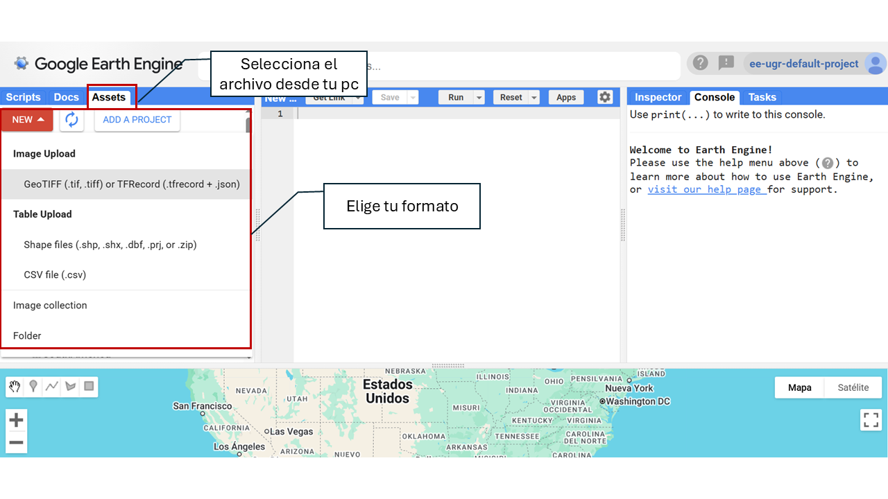
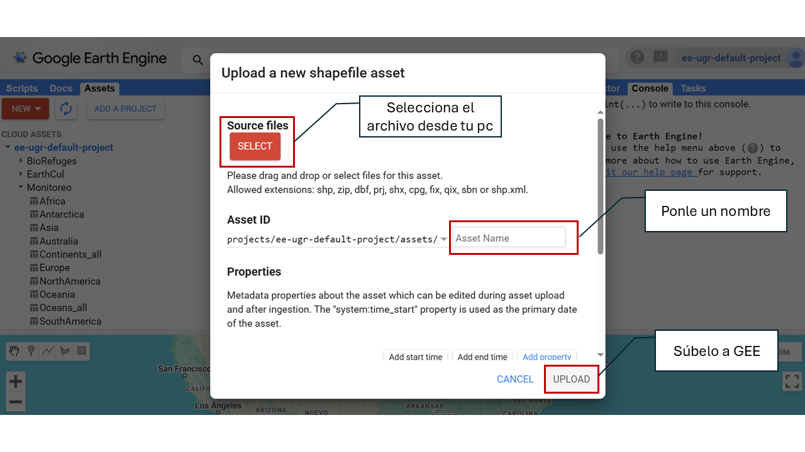

4 Área de estudio
Selecciona ROI– Elige tu área de estudio.
En esta sección puedes definir la región de interés (ROI) sobre la que se realizará el análisis. Tienes varias opciones disponibles para seleccionar o cargar tu área de estudio. Por defecto, la herramienta está configurada para dibujar polígonos personalizados. Para cambiar el tipo de geometría (por ejemplo, a punto o rectángulo), accede al menú de opciones de dibujo antes de definir la región de interés.

4.1 🖊️ Dibujar tu región de interés (ROI - Region of Interest)
Puedes dibujar regiones manualmente usando esta opción. Cuando dibujas una región (punto, línea o polígono), esta se almacena como un objeto Geometry que aparecerá como capa en la parte superior izquierda del mapa.

4.2 📂 Uso de un Asset Público o Propio
Para cargar un asset (como tu área de estudio, por ejemplo, un shapefile), necesitas tener una cuenta activa en Google Earth Engine (GEE). Si aún no tienes una cuenta, puedes crearla fácilmente siguiendo esta guía paso a paso: Cómo registrarse en Google Earth Engine.
Una vez que tu cuenta esté activa, podrás subir tus propios datos espaciales en GEE siguiendo estos pasos:
4.2.1 Accede a la herramienta de subida
- Ve a Google Earth Engine Code Editor.
- En la esquina izquierda, haz clic en el ícono de Assets .
- Haz clic en el botón NEW.

4.2.2 Sube el archivo
- Elige el tipo de archivo: Image (raster) o Table (vector).
- Selecciona el archivo desde tu pc.
- Define la carpeta de destino dentro de tus assets (ejemplo:
users/tu_usuario/mi_asset). - Haz clic en UPLOAD.

4.2.3 Espera el procesamiento
- El archivo pasará por un proceso de subida.
- Puedes ver el estado en la sección de Tasks.
- Una vez procesado, el asset estará disponible en tu cuenta de GEE.
4.2.4 Usa el asset en MonitorEO
Una vez subido, debes asegurarte de:
- Copiar y pegar correctamente esta ruta para que el recurso pueda cargarse sin errores.

- Compartir el asset como público.

A continuación, salimos de GEE y nos vamos de nuevo a la app MonitorEO. Ahí indica la ruta del asset, es decir, la dirección única donde se encuentra almacenado el recurso dentro de tu cuenta de GEE. Esta ruta suele tener el siguiente formato:
users/tu_usuario/nombre_del_asset

4.3 📌Punto específico y radio
Puedes introducir coordenadas de latitud y longitud para definir una ubicación exacta sobre la superficie terrestre. A partir de ese punto, se puede generar un área circular (buffer) cuyo radio, en metros, es definido por el usuario. Esta funcionalidad permite delimitar zonas de interés alrededor de un punto específico para su análisis.
Latitud: Ingresa la coordenada decimal de latitud (por ejemplo: -37.6009). Usa el punto (.) como separador decimal. No uses comas ni símbolos adicionales.
Longitud: Ingresa la coordenada decimal de longitud (por ejemplo: -63.854). También debe estar en formato decimal con punto. Recuerda tener en cuenta el símbolo negativo si es necesario.
Radio: Introduce el radio en metros (por ejemplo: 1000 para un kilómetro).

4.4 🏞️ Parque Nacional
Puedes seleccionar como área de estudio cualquiera de los Parques Nacionales de España y Portugal disponibles en la plataforma.

4.5 🌍 Base de datos mundial sobre zonas protegidas WDPA
World Database on Protected Areas (WDPA), es la fuente más completa y actualizada de información geoespacial sobre áreas protegidas a nivel global. Gestionada por ONU Medio Ambiente y el Centro de Monitoreo de la Conservación del Medio Ambiente (UNEP-WCMC), proporciona datos detallados sobre parques nacionales, reservas naturales y otras zonas protegidas.
Para seleccionar un área protegida mediante su ID, puedes acceder a la base de datos a través del sitio web oficial de Protected Planet (🔗 protectedplanet.net). Allí, puedes buscar áreas protegidas por nombre, país o categoría de protección y obtener su identificador único (WDPA ID).


4.6 📁 Elige un proyecto
Puedes seleccionar como área de estudio las zonas asociadas a los distintos proyectos desarrollados en el marco de OBSNEV. Cada uno de ellos define áreas específicas con distintos enfoques temáticos:
- EarthCul: Áreas de influencia socioeconómica de los Parques Nacionales de montaña en España y Portugal.
- EVEREST: Parques Nacionales de montaña de España y Portugal.
- PRESINMED
- BioRefuges